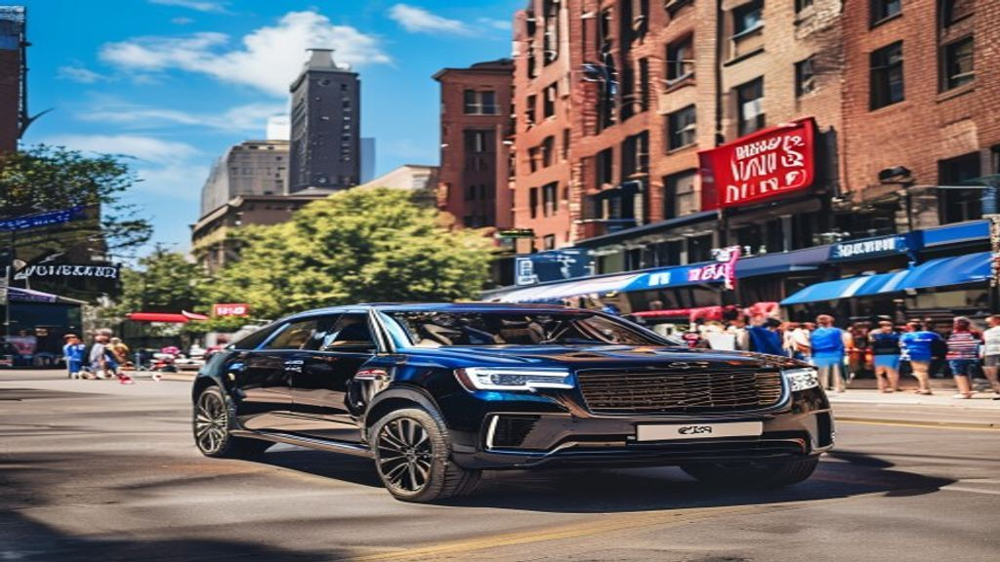

Chicago Cubs Wrigley Field transportation covers every fan and every group size: black car transfers for two on a date night, luxury SUVs for friend groups of five to six, extended stretches for bachelor parties of eight to twelve, and party buses for corporate hosting up to twenty-eight. Flat pricing, no rideshare surge.

A Cubs game at Wrigley Field is one of the great American sporting experiences — the ivy on the outfield wall, the hand-turned scoreboard, the marquee glowing on Clark Street, and a Wrigleyville crowd that makes every game feel like a celebration. The one part of the Cubs experience that no fan enjoys is the logistics: parking near Wrigley Field is famously difficult and expensive, surface-street traffic in Lakeview backs up an hour before first pitch, the Red Line is packed shoulder-to-shoulder on game days, and rideshare surge pricing post-game routinely doubles or triples normal fares. Reserve your Chicago Cubs Wrigley Field transportation with us and skip the worst part of game day.
Why Smart Cubs Fans Skip Driving to Wrigley
Wrigley Field has one of the smallest parking footprints of any Major League ballpark relative to its attendance. Most of the parking is in surface lots and residential garages within a few blocks of the stadium, all priced at premium game-day rates. Lakeview's residential streets are zone-permitted, so street parking is largely unavailable. The drive home after a Friday night or Sunday afternoon game can take an hour just to clear the neighborhood. Our chauffeured service drops you within a block of the Wrigley gates, then picks you up at a pre-agreed corner the moment you walk out — no parking, no traffic, no Uber surge waiting.
Vehicles for Every Cubs Group Size
Cubs game-day groups range from a couple on a date night to corporate suites of twenty. We have the right vehicle for each. Our luxury executive sedans are perfect for two to three fans wanting a premium ride to the game. Our luxury SUVs comfortably move five to six fans, ideal for a friend group or a family heading to a Saturday afternoon game. Our extended SUVs and stretch limousines accommodate eight to twelve, popular for birthdays, bachelor parties, and out-of-town visitors. Our luxury party buses seat fifteen to twenty-eight with onboard sound, lighting, and beverage coolers.
Pickup and Drop-Off Built for Wrigley Logistics
Wrigley Field has a specific drop-off and pickup geography that our chauffeurs know inside and out. We coordinate drop-off near the Addison and Clark gates or at the corner of Sheffield and Waveland depending on which entrance is closest to your seats. After the game, we use a pre-agreed pickup point on a side street one block off the main flow of pedestrian traffic, which means you walk out of the ballpark and into a waiting vehicle in two or three minutes — not the twenty-five minutes a rideshare typically takes during a post-game surge.
Hourly Charters for the Full Wrigleyville Experience
For groups that want to make a full day of it, we offer hourly charters that cover pre-game drinks, the game itself, and post-game celebration. A typical Cubs hourly charter starts with a downtown hotel pickup, includes a stop at a Wrigleyville pre-game bar like Murphy's Bleachers, Sluggers, or the Cubby Bear, drops the group at the gates fifteen minutes before first pitch, waits through the game, picks up at the agreed corner after the final out, and loops back through Wrigleyville for one more stop before returning the group to the hotel or downtown. Call 312-448-8787 to design a custom Cubs game-day itinerary.
Corporate Suite and Client-Hosting Transportation
Many of our most loyal Cubs game-day clients are Chicago corporate teams using games to host clients, prospects, and partners. The standard arrangement is a luxury SUV or sprinter van that picks up clients at their hotels, gathers everyone at the host company's office, and moves the group together to Wrigley with a coordinated post-game return.
Bachelor and Bachelorette Party Transportation
Wrigley Field is one of Chicago's most popular bachelor and bachelorette party destinations. Our luxury party buses are built for exactly this kind of event — wraparound leather seating, premium sound systems, color-changing LED lighting, beverage coolers, and standing room.
Out-of-Town Visitors and Bucket-List Cubs Trips
For out-of-town fans visiting Chicago specifically to see a game at Wrigley — and there are thousands every season — we offer a complete bucket-list package: airport pickup at O'Hare or Midway, hotel transfer, pre-game Wrigleyville tour, drop at the gates, post-game pickup, and return to the hotel.
Transparent Game-Day Pricing — No Post-Game Surge
The frustrating part of using rideshare for a Cubs game is the surge pricing that hits the moment everyone leaves the ballpark together. A ride that costs twelve dollars at noon can cost forty-five dollars at the final out. Our Cubs game-day pricing is flat. A point-to-point transfer to Wrigley is quoted as one number. An hourly charter that covers the full day is quoted as one number.
Reserve Your Chicago Cubs Game-Day Ride
Wrigley Field is unforgettable. Getting to and from Wrigley Field — when handled well — should be invisible. Lock in Wrigley pickup for instant confirmation, or call 312-448-8787 to design a custom Cubs game-day package with our reservations team.